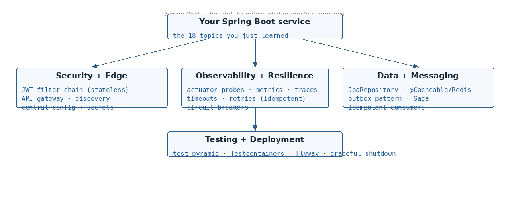

Spring Security — the filter chain and a JWT resource server in one page · Actuator and observability — health…
☕ 8 min read · 🎬 Video walkthrough · 📊 UML diagram · 💻 Runnable code
⚡ In a nutshell — Spring Security — the filter chain and a JWT resource server in one page · Actuator and observability — health probes, metrics, tracing · Spring Data JPA repositories — the layer above the EntityManager · Calling other services — RestClient, timeouts, retries, circuit breakers
Security in Spring is a chain of servlet filters in front of DispatcherServlet (see Topic 13's pipeline diagram — SecurityFilterChain slots in there).

The modern stateless setup — your API validates JWTs issued by an identity provider (Keycloak, Auth0, Cognito):
@Configuration
@EnableWebSecurity
public class SecurityConfig {
@Bean
SecurityFilterChain api(HttpSecurity http) throws Exception {
http.csrf(csrf -> csrf.disable()) // stateless API
.sessionManagement(s -> s.sessionCreationPolicy(SessionCreationPolicy.STATELESS))
.authorizeHttpRequests(auth -> auth
.requestMatchers("/actuator/health/**").permitAll()
.requestMatchers("/admin/**").hasRole("ADMIN")
.anyRequest().authenticated())
.oauth2ResourceServer(o -> o.jwt(Customizer.withDefaults()));
return http.build();
}
}
spring.security.oauth2.resourceserver.jwt.issuer-uri=https://idp.example.com/realms/app
Good to know: method-level rules with
@PreAuthorize("hasRole('ADMIN')")(enable via@EnableMethodSecurity) — implemented with the same AOP machinery as Topic 09.
Add spring-boot-starter-actuator and you get production endpoints for free:
/actuator/health/liveness — Kubernetes liveness probe — restart me if failing/actuator/health/readiness — Readiness probe — stop sending traffic, don't restart/actuator/metrics — Micrometer metrics (JVM, HTTP, Hikari pool, caches)/actuator/prometheus — Scrape endpoint for Prometheus/actuator/info, /actuator/env — Build info, resolved config (lock these down)@Observed / @Timed — AOP again.management.endpoints.web.exposure.include=health,info,metrics,prometheus
management.endpoint.health.probes.enabled=true
The notes stop at the EntityManager (Topic 17). In real projects you mostly use the layer above it:
public interface UserRepository extends JpaRepository<User, Long> {
Optional<User> findByEmail(String email); // derived query
List<User> findByAgeGreaterThanOrderByNameAsc(int age); // parsed from the name
@Query("select new com.app.dto.UserView(u.id, u.name) from User u where u.active = true")
List<UserView> findActiveViews(); // DTO projection
}
JpaRepository gives you save/findById/findAll/delete, paging (findAll(Pageable)) and sorting for free — all internally @Transactional on the EntityManager you already understand.@Query(native = true) or the EntityManager.Added: Topic 18's Architect's Corner says "prefer a distributed cache (Redis) via
@Cacheable" — here is what that actually looks like. Spring's cache abstraction is provider-agnostic (Redis, Caffeine, Hazelcast...) and works on any bean method, not just JPA entities.
@SpringBootApplication
@EnableCaching // switch the abstraction on
public class Application { ... }
@Service
public class ProductService {
@Cacheable(value = "products", key = "#id") // read-through
public Product getProduct(long id) {
return repository.findById(id).orElseThrow(); // runs only on cache miss
}
@CachePut(value = "products", key = "#product.id") // update cache after write
public Product updateProduct(Product product) {
return repository.save(product);
}
@CacheEvict(value = "products", key = "#id") // invalidate on delete
public void deleteProduct(long id) {
repository.deleteById(id);
}
}
# with spring-boot-starter-data-redis on the classpath:
spring.cache.type=redis
spring.data.redis.host=redis.internal
spring.cache.redis.time-to-live=10m # ALWAYS set a TTL
@Transactional/@Async: self-invocation bypasses it.@Bean
RestClient paymentClient(RestClient.Builder builder) {
return builder.baseUrl("https://payments.internal")
.requestFactory(ClientHttpRequestFactories.get(
ClientHttpRequestFactorySettings.DEFAULTS
.withConnectTimeout(Duration.ofSeconds(2))
.withReadTimeout(Duration.ofSeconds(5))))
.build();
}
PaymentResponse pay(PaymentRequest req) {
return paymentClient.post().uri("/v1/payments")
.body(req).retrieve().body(PaymentResponse.class);
}
Resilience rules every architect enforces:
@CircuitBreaker, @RateLimiter, @Bulkhead — annotation + AOP, like Topic 13) stop hammering a dying dependency and fail fast.Added: three infrastructure pieces every microservice architect is asked about — where requests enter, how services find each other, and where configuration lives.
/users/** → user-service) — instead of copy-pasted into every service.http://user-service resolves via cluster DNS to a Service that load-balances across pods.@RefreshScope) or Kubernetes ConfigMaps/Secrets injected as env vars (which slot into Topic 08's property precedence). Secrets belong in a secret manager (Vault, AWS Secrets Manager), never in git.Good to know: on Kubernetes, prefer the platform's primitives (Ingress, DNS, ConfigMaps) over running Eureka/Config Server yourself — Spring Cloud's versions matter most on VMs or plain Docker where no platform provides them.
Some work shouldn't be a blocking HTTP call or a lost-on-crash @Async task (Topic 12). Queues (Kafka, RabbitMQ) give durability, retries and decoupling:
kafkaTemplate.send("user-events", userId, new UserCreatedEvent(userId));
outbox table in the same transaction; a relay process publishes rows and marks them sent. No 2PC needed.Added: Topic 17 deferred "transactions spanning multiple DBs". In microservices the answer is usually not JTA/2PC (blocking, fragile, unsupported by most brokers) — it's a Saga: one business transaction becomes a chain of local transactions, each with a compensating action to undo it if a later step fails.
Example — placing an order across three services:
Order Service Payment Service Inventory Service
CREATE order --> CHARGE card --> RESERVE stock
(local txn) (local txn) (local txn)
|
stock unavailable ✗
v
CANCEL order <-- REFUND card <-- compensate backwards
Two coordination styles:
OrderCreated → Payment listens → emits PaymentCompleted → Inventory listens...). Simple for 2–3 steps; beyond that, "who reacts to what" becomes untraceable.Design rules:
PENDING_PAYMENT, AWAITING_STOCK) instead of pretending atomicity.@WebMvcTest + MockMvc — fast — controller mapping, validation, error shape@DataJpaTest — fast — repositories, queries, mappings@SpringBootTest + Testcontainers — slow — the whole app against a REAL databaseFROM eclipse-temurin:21-jre AS runtime
COPY target/app.jar app.jar
ENTRYPOINT ["java","-jar","/app.jar"]
server.shutdown=graceful + spring.lifecycle.timeout-per-shutdown-phase=30s — finish in-flight requests before the pod dies; pairs with the readiness probe.V1__init.sql, V2__add_index.sql) runs at startup; ddl-auto=validate confirms entities match (Topic 18).@PreAuthorize@EntityGraph vs N+1@EnableCaching + @Cacheable/@CachePut/@CacheEvict (AOP proxy — self-invocation bypasses it); Redis for shared cache across replicas; always TTL, degrade to DB on cache failure.@Async is for fire-and-forget only.@WebMvcTest, @DataJpaTest) → few @SpringBootTest with Testcontainers.ddl-auto=validate, layered Docker images.This completes the spring-boot notes series. Topics 01–18 come from the handwritten notes; this topic fills the gaps between those notes and what a software architect is expected to know.
👏 Found this useful? Give it a few claps so more developers discover it, and follow for the whole series — every article ships with a UML diagram, runnable code, a narrated video, and a companion PDF. Happy building! 🚀